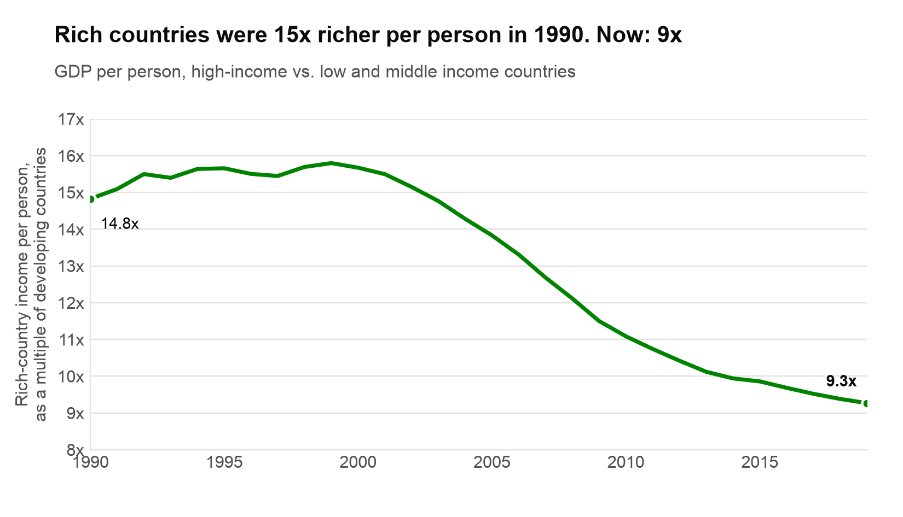
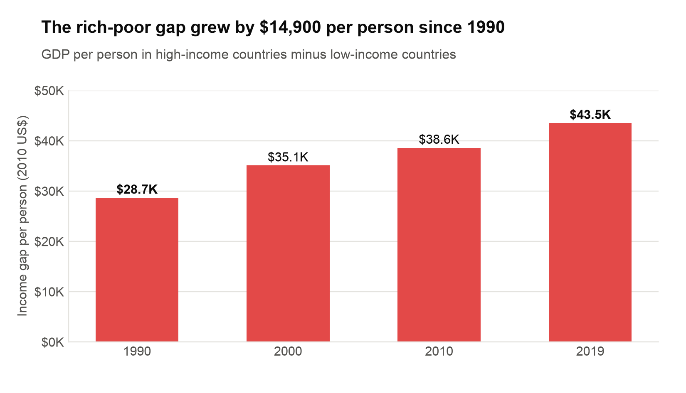

Proposition: The gap between rich and poor countries is shrinking.
Both visualizations use the same World Bank data: GDP per person in constant 2010 US dollars for high-income countries and for poorer income groups, from 1990 to 2019. Design decision scores below use the scale from -2 (fully deceptive) to 2 (fully earnest).
FOR the Proposition: The gap between rich and poor countries is shrinking

Design Decisions and Rationale:
- -1Using ratio instead of dollar amounts. Dividing rich-country income by developing-country income makes the gap decrease (14.8x in 1990 to 9.3x in 2019), but in raw dollars the gap between the same groups increased. A ratio is a common way to measure inequality, so this is not fully deceptive, but I chose it because it is the calculation that makes the gap shrink. I considered showing the ratio and the dollar gap together, but that would have weakened the argument.
- -1.5Choosing "low and middle income" as the comparison group. The World Bank puts China and India in the "low and middle income" group, and their rapid growth pulled the whole group’s average up drastically. It is debatable whether they still fit that label. Comparing rich countries to only the lowest income countries instead, the ratio stays nearly flat (52x in 1990, 53x in 2019). The chart never shows that comparison, so I scored this close to fully deceptive.
- -1Truncated y-axis that does not start at 0. The axis runs from 8x to 17x, which makes the slope of the line look much more dramatic. A 37% decline fills almost the whole height of the chart and reads as a collapse. The tick labels are still visible, so the truncation is technically shown, which makes it easy to miss at first glance. A zero-based axis would show a smaller-looking drop.
- -0.5Using green to highlight the "winner". Green signals progress and success, so the falling line reads as good news before the reader looks at any numbers. Color alone does not change the data, so I scored this as only mildly deceptive.
- -0.5Using an eye-catching headline with the most dramatic numbers. The title "Rich countries were 15x richer per person in 1990. Now: 9x" leads with the biggest-sounding drop, and it rounds 14.8x up to 15x and 9.3x down to 9x, which slightly exaggerates the change. The exact values are still labeled on the chart, which keeps the claim accurate.
AGAINST the Proposition: The gap between rich and poor countries is not shrinking

Design Decisions and Rationale:
- -1Using raw dollar gap instead of ratio. This is the exact opposite of the first technique on Side A. Subtracting low-income GDP per person from rich-country GDP per person makes the gap grow from $28,664 in 1990 to $43,522 in 2019. A subtracted gap grows whenever rich countries grow at all, even when poorer countries grow at a similar percentage rate. Choosing raw numbers versus calculated measures as a means of making a comparison appear a certain way counts as a deceptive technique.
- -1.5Changing the comparison group to only "low income". Side A compares rich countries to "low and middle income" countries, but this chart switches to "low income" only, which leaves out China and India as the massive contributors to growth. This makes the gap as large as possible. The difference is noted in the subtitle, but readers might not pay close attention and notice that the comparison changed between the two charts.
- -1Selectively chosen years. Showing only 1990, 2000, 2010 and 2019 makes it seem like there was a constant increase. It omits the years where the gap decreased: in 2008 and 2009 the gap shrank, by $1,625 per person in 2009 alone. Ten-year steps look like a neutral choice, which makes this hard to notice.
- -0.5Using red to highlight the "loser". Red signals a problem or failure, so the bars read as bad news before the reader looks at the numbers. Like the green on Side A, color does not change the data, so I scored it as only mildly deceptive.
- -0.5Using an eye-catching headline with the most dramatic number. The title "The rich-poor gap grew by $14,900 per person since 1990" leads with the largest-sounding number. It is accurate, but it gives no growth rate, so the reader cannot see that both groups grew at similar percentage rates.
Final Reflection
Throughout this project the most surprising part to me was that I never had to change any numbers. Both charts use the same World Bank dataset, and every value used in them them is true. The opposite conclusions come entirely from decisions that can be justified as day to day operations: whether to divide or subtract, which income group counts as "poor," where the y-axis starts, and which years to show. Building the argument for each side was straightforward once I found the calculation that supported it. The harder part was making the deceptive choices subtle enough to pass a first glance, and then scoring them objectively, because nearly every choice I made has a reasonable and earnest justification.
That made me rethink what "ethical visualization" means. I used to think of deception as something very blatantly breaking a visual rule such as a misleading axis, but here the most effective techniques were data transformations, and a ratio or a dollar gap is not wrong on its own. What made them deceptive was the purpose: I chose each measure because it supported the side I was arguing, and I hid the measure that contradicted it. I now see ethical visualization as being less about following conventions and more about whether the reader could reach a different conclusion if they knew what I changed or left out.
The clearest boundary I can draw is between framing and concealment within the data. Choosing a strong title, a meaningful color, or a focused comparison are all acceptable persuasion as long as the reader can see what was chosen. However it becomes misleading when a choice hides information the reader would need to judge the claim, such as switching comparison groups between charts, leaving out the years where a trend reversed, or showing only one of two equally valid calculations. A simple test is whether the chart would still persuade the same way if its methods were explicitly stated next to it. If the chart would still convince people, it is persuasive. If the note would change their mind, it is deceptive. For example, if my ratio chart included the note "But compared to only the poorest countries, the ratio stayed at 52x vs 53x", readers would no longer believe the gap is shrinking. That is why I consider it deceptive and not just persuasive.